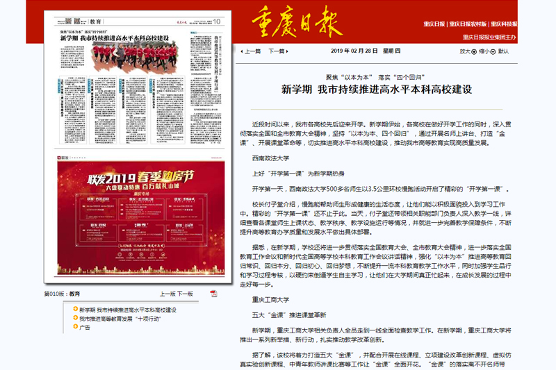
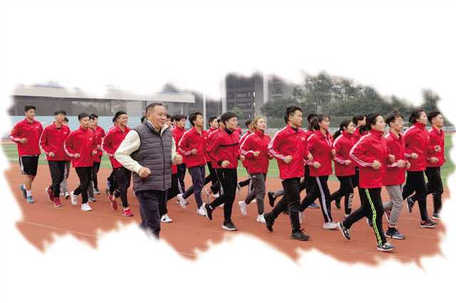

重庆日报：聚焦“以本为本” 落实“四个回归” 新学期 我市持续推进高水平本科高校建设

聚焦“以本为本” 落实“四个回归”
新学期 我市持续推进高水平本科高校建设
《重庆日报》2019年2月28日 第10版

近段时间以来，我市各高校先后迎来开学。新学期伊始，各高校在做好开学工作的同时，深入贯彻落实全国和全市教育大会精神，坚持“以本为本、四个回归”，通过开展名师上讲台、打造“金课”、开展课堂革命等，切实推进高水平本科高校建设，推动我市高等教育实现高质量发展。
西南政法大学
上好“开学第一课”为新学期热身
开学第一天，西南政法大学500多名师生以3.5公里环校慢跑活动开启了精彩的“开学第一课”。
校长付子堂介绍，慢跑能帮助师生形成健康的生活态度，让他们能以积极面貌投入到学习工作中。精彩的“开学第一课”还不止于此。当天，付子堂还带领相关职能部门负责人深入教学一线，详细查看各课堂师生上课状态、教学秩序、教学设施运行等情况，并就进一步完善教学保障条件，不断提升高等教育办学质量和发展水平做出具体部署。
据悉，在新学期，学校还将进一步贯彻落实全国教育大会、全市教育大会精神，进一步落实全国教育工作会议和新时代全国高等学校本科教育工作会议讲话精神，强化“以本为本”推进高等教育回归常识、回归本分、回归初心、回归梦想，不断提升一流本科教育教学工作水平，同时加强学生品行和学习过程考核，以硬约束倒逼学生自主学习，让他们在大学期间真正忙起来，在成长发展的过程中走好每一步。
重庆工商大学
五大“金课”推进课堂革新
新学期，重庆工商大学相关负责人全员走到一线全面检查教学工作。在新学期，重庆工商大学将推出一系列新举措、新行动，扎实推动教学改革创新。
据了解，该校将着力打造五大“金课”，并配合开展在线课程、立项建设改革创新课程、虚拟仿真实验创新课程、中青年教师讲课比赛等工作让“金课”全面开花。“金课”的落实离不开名师带动。为此重庆工商大学还将举行名师上讲台活动，做到国家级、市级、校级名师以及教学标兵、教学新星、教课优秀教师等带头进课堂，激发学生的学习热情，带动全校教师教学水平上台阶。
在“金课”领航下，新学期重庆工商大学继续推行课堂革新，推行课堂教学改革创新的具体工作，目前已扩大在线课程教学数量，出台在线课程建设与管理办法，制定在线课程奖励规定以及课程达标和评优的标准和检查评比机制。
据悉，该校还要求每个学院、专业都必须在面上开展课堂教学范式改革，已立项12个教学范式改革创新试点。
重庆科技学院
推动本科教育高质量发展
对于重庆科技学院而言，2019年是该校全面落实新时代本科教育系列改革的开局之年和奋进之年，也是本科教育奋力发展的关键之年。该校将如何紧抓机遇，推动学校本科教育高质量高水平快速发展？
学校相关负责人介绍，学校将坚持“以本为本”，落实本科教学改革的各项举措。一方面，抓实《重庆科技学院深化“三全育人”综合改革建设方案》各项任务，全面实施本科生导师制。另一方面，推进新工科专业建设和传统工科专业的智能化改造，打造“人工智能+”的新工科专业群。
同时，该校将进一步推进专业认证与评估，构建新专业合格评估、校级认证和国际工程教育认证体系，并深入推进以信息技术与教育教学深度融合的课程建设“五化”工程，着力打造一流课程和一流课堂。
3月中旬，该校将召开全校本科教育工作大会，明晰教学改革各项举措，推动高水平应用型特色科技大学建设。
重庆文理学院
“五大行动”落实以本为本
在重庆文理学院新学期开学工作会上，校长黄伟九提出要坚持“以本为本”，加强高水平应用型高校建设、一流应用型本科教育建设、一流课程和课堂建设和教师分层激励制度设计。
为了将“以本为本”落到实处，新学期重庆文理学院将推出“五大行动”。
“行动一”是推进应用型本科教育建设，制定出台学校《一流应用型本科教育建设行动计划》等文件，做好国家级、市级一流本科专业，卓越计划、精品在线开放课程，示范性虚拟仿真实验教学项目以及教改项目等培育与申报。“行动二”是严格本科教学管理，修订学校《教师课堂教学规范》、《学生学籍管理规定》等文件，并利用互联网、大数据等技术手段进一步完善“四个三”本科教学质量监控体系。“行动三”是完善落实教师分层激励机制，激发教师投入本科教学的积极性和主动性。“行动四”是以“微项目”研究与实践为依托，持续深化“五大”教学改革，探索并建立云班课、对分课堂等典型特色教学范式。“行动五”是实施教师“跨界研修”计划，鼓励教师跨专业课程、跨学科门类、跨行业企业、跨国内外高校开展跨界研修。
通过“五大行动”，重庆文理学院将为打磨办学特色和培养应用型人才注入更多内涵。